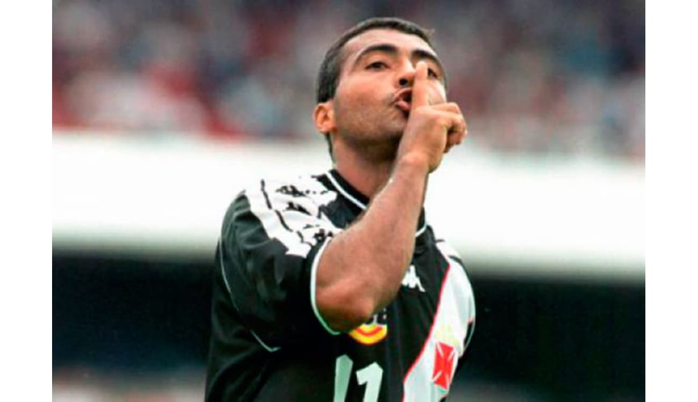
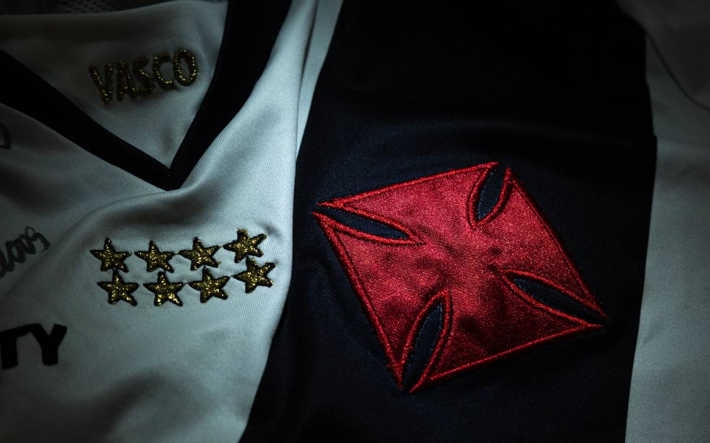
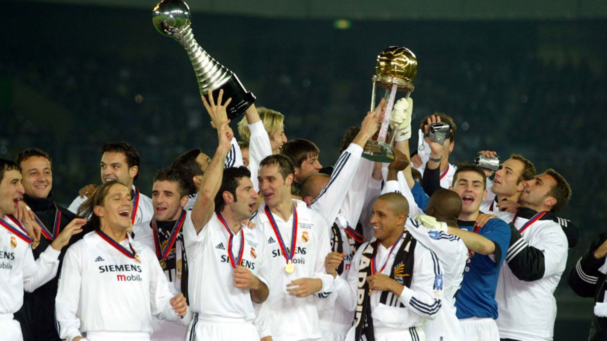

taça Copa Libertadores da América 1 título 1998
taça Campeonato Brasileiro 4 títulos 1974, 1989, 1997 e 2000
taça Campeonato Brasileiro - Série B 1 título 2009
taça Recopa Sul-Americana 2 títulos 1993 e 1994
taça Campeonato Sul-Americano de Clubes 1 título 1948
taça Copa Mercosul 1 título 2000
ROMARIO: No Vasco, Romário iniciou a sua carreira profissional em 1985, promovido ao time principal por Antônio Lopes. Sua estreia em jogos oficiais ocorreu em 6 de fevereiro, na vitória vascaína por 3–0 sobre o Coritiba, partida válida pelo Campeonato Brasileiro.
Foram 27 em toda a carreira de Romário para serem retratados no oitavo capítulo da série “Romário é 11”. Tanto no Brasil, quanto no exterior, o Baixinho levantou várias taças e foi protagonista em praticamente todas elas.
talvez faltou algo porem ele jogou nos 3 times cariocas entre eles Flamengo, Fluminense e Vasco
Há exatos 20 anos, o Estádio Nacional De Tóquio foi palco de uma das maiores finais de Mundial de Clubes da história. Campeão da Libertadores de 1998, o Vasco da Gama - recheado de craques como Juninho Pernambucano, Luizão, Mauro Galvão e Carlos Germano - enfrentou o poderoso Real Madrid, que havia faturado a Uefa Champions League depois de 32 anos.
a derrota chegou foi um jogo equilibrado 2x1 para o real madrid
